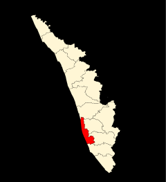

 Affectionately nicknamed the 'Venice of the East' by travellers from across the world, Alappuzha is a district of immense natural beauty. Embraced by the Arabian Sea in the west and a network of lakes, lagoons and freshwater rivers criss-crossing it, this backwater country is home toa vibrant animal and avian life. By virtue of its proximity to the sea, the town has always carved out an exclusive place for itself in the maritime history of Kerala. Renowned for its boat races, beaches, marine products and coir industry, the singularity of this land is the region called Kuttanad. A land of lush paddy fields referred to as the 'Rice Bowl of Kerala', it is one of the few places in the world where farming is done below sea level. This once prosperous trading and fishing centre is nowadays a world renowned backwater tourist destination.